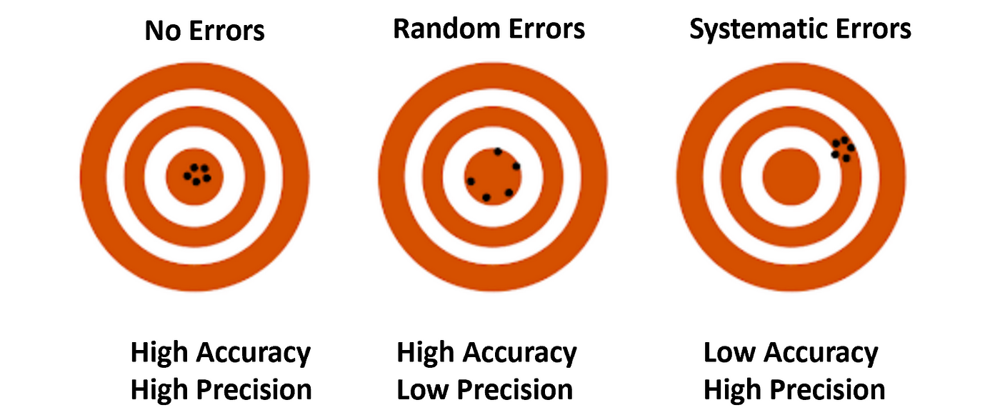

Introduction to Small Area Estimation
Introduction
Small Area Estimation (SAE) helps us estimate important information (like average income or unemployment rates) for small groups — for example, a small town, or a specific age group — even when we don’t have many survey responses from them.
The big idea is: “Borrow strength” from related groups to make better estimates.
The general
Why Do We Need SAE?
- Surveys usually collect good information for the whole country or large regions.
- But for small areas, the number of responses is often too small.
- Direct estimates (using only data from the area) can be unreliable — big margins of error!
- SAE methods improve the precision of estimates by combining:
- What we know from the small area’s data.
- What we know from other areas or external information.
Basic Definitions
- Population: the full group we’re interested in (e.g., all people in a country).
- Domain: a subgroup of the population (e.g., LSOAs, women aged 65+ in Tuscany).
- Estimator: rule or formula to approximate unknown population parameters (e.g. sample mean, poverty rates).
- Direct estimator: uses only the sample from the domain itself.
- Indirect estimator: uses auxiliary information to approximate the population values.
- Small Area: a domain with too few data points to make reliable direct estimates.
- Accuracy: distance between the statistical estimates and the “correct” values. It includes random errors (unpredictable and due to chance e.g. stopwatch), and systematic errors (consistent and repeatable e.g. biased scale)

Sampling
Classical (Design-Based) Estimation
In traditional surveys, we trust randomness: if the sample is random enough, our estimates are unbiased. For example, the average income from a random sample will be close to the true average.
Formulas:
- Bias: Difference between what we estimate and the true value.
- Variance: How much estimates vary from sample to sample.
- Mean Squared Error (MSE): A measure combining bias and variance:
\[ MSE(\hat{\theta}) = Var(\hat{\theta}) + (Bias(\hat{\theta}))^2 \]
When sample sizes are large, direct estimators are usually fine. When small, problems appear.
Horvitz-Thompson estimator
The Horvitz-Thompson (H-T) estimator is a fundamental design-based estimator used to estimate a population total or mean when sampling is done without replacement and with unequal probabilities of selection. The H-T estimator is calculated as the weighted mean of the observations:
\[ \hat{\bar{Y}}_i^{\text{DIR}} = \frac{1}{N_i} \sum_{j \in S_i} w_j y_j \] where \(N_i\) is the population size of domain \(i\), \(S_i\) is the set of sampled observations in domain \(i\), \(w_j\) is the sampling weight for unit \(j\), and \(y_j\) is the obsevation for unit \(j\), for all \(j \in S_i\). The H-T estimator is design-unbiased –its expected value across all possible samples that could be drawn under a given design equals to the true value of the population. However, this estimator presents very large variances when dealing with small sample sizes –which is the case in small area problems– making it not reliable in such cases.
Synthetic Estimators
Idea: Assume that small areas are similar to bigger areas.
Simple case: - Suppose the unemployment rate for a region is known. - Then, for a small city with little data, just use the regional rate as an estimate.
Model (no auxiliary variables):
\[ y_j = \beta + \varepsilon_j \]
Here, everyone shares the same “baseline” $ $, and the differences ( _j ) are random noise.
If we have auxiliary variables (e.g., income, education level), we can improve it:
Model with auxiliary variables:
\[ y_j = x_j'\beta + \varepsilon_j \]
where: - ( x_j ) is information about unit ( j ) (e.g., their education). - ( ) are coefficients showing how much each factor matters.
Pros: - Simple and intuitive. - Can give estimates for areas with no sample at all.
Cons: - Can be biased if small areas differ from big areas.
Composite Estimators
Idea: Mix direct and synthetic estimates.
Formula:
\[ \hat{Y}_{i,C} = \phi_i \hat{Y}_{i,D} + (1 - \phi_i) \hat{Y}_{i,S} \]
where: - ( {i,D} ) = direct estimator (from sample only) - ( ) = synthetic estimator (borrowing strength) - ( _i ) = weight (between 0 and 1)
If direct estimates are good (small variance), give them more weight. If they are noisy, trust synthetic more.
Model-Based Approach
Rather than relying on randomness alone, we build a model about how the data behaves.
Two popular types: - Area-level models (e.g., Fay-Herriot model) - Unit-level models (model individuals’ data)
Fay-Herriot Model (Area-Level)
Two equations:
- True value for area i:
\[ \theta_i = x_i'\beta + u_i \]
- What we observe (direct estimator):
\[ \hat{\theta}_i = \theta_i + e_i \]
where: - ( u_i ) is area-specific random effect. - ( e_i ) is sampling error (known variance).
Assumptions: - ( u_i N(0, _u^2) ) - ( e_i N(0, _i) )
Goal: Predict ( _i ) as best as we can.
Resulting estimator (Empirical BLUP):
\[ \hat{\theta}_{i,FH} = \hat{\phi}_i \hat{\theta}_i + (1-\hat{\phi}_i)(x_i'\hat{\beta}) \]
where ( _i ) is a shrinkage factor depending on ( _u^2 ) and ( _i ).
The more reliable the direct estimate (small ( _i )), the more weight we give to ( _i ).
Unit-Level Models
These models use data at the individual level.
Equation:
\[ y_{ij} = x_{ij}'\beta + u_i + e_{ij} \]
where: - ( y_{ij} ): response for person ( j ) in area ( i ) - ( x_{ij} ): auxiliary variables for person ( j ) - ( u_i ): area effect - ( e_{ij} ): individual error
Better when individual-level data is available.
Real-World Applications (Examples)
- Health statistics: Estimating disease rates in small towns.
- Agriculture: Crop yields in small counties.
- Income and poverty: Estimating poverty rates in municipalities.
In all cases, small area models let us provide useful estimates even when few survey responses exist.
Final Remarks
Small Area Estimation helps decision-makers get reliable information even for small regions or groups. The success depends on: - Good auxiliary information. - Careful model selection and validation.
It is a balance: improving precision while controlling for possible model errors.
References
- Rao, J.N.K., and Molina, I. (2015). Small Area Estimation (2nd Edition). Wiley.
- EMOS Learning Materials, Small Area Estimation: An Introduction.